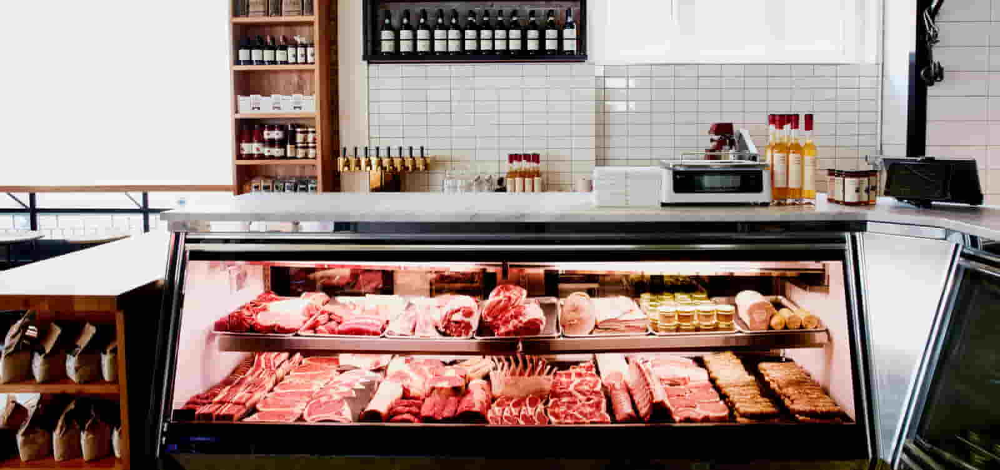
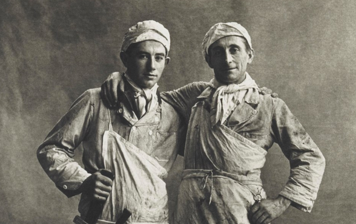
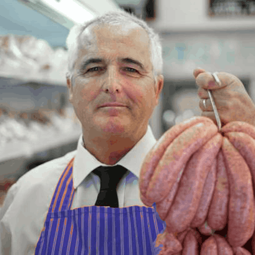
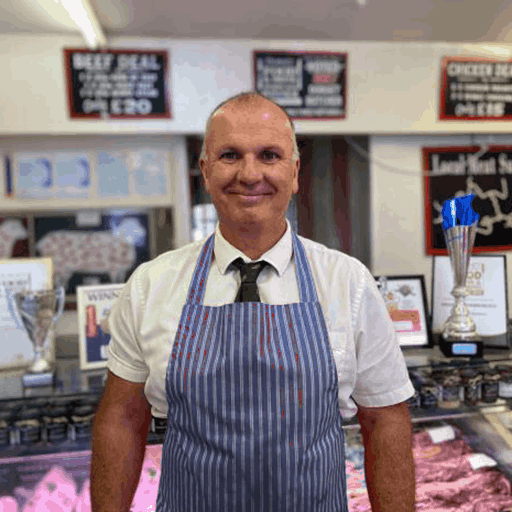

Jenkin's Butcher | About
Premium meat from local farm
About us
Established in 1932, the Jenkins’ Butchers, purveyors of premium meat are committed to serving fresh meat that is seasonal, locally sourced, and grown in a sustainable manner
Over the years, we dedicated to providing excellent service to our customers. We pride ourselves in providing fresh, premium meat cut deliveried from local farm. Fresh, local produce is our main aim.
Despite supermarkets have supplanted the fading traditional butcher shop as the primary source of meat, our business is happy going into fourth generation soon. We consider our shop not just a business, but a responsibiliy to gather the best meat for our local community.
Our Team
Current shop owner - Peter
As the third generation of Jenkin's Butchers, I will ensure that our shop provides the greatest quality, service, and experience for our Ballyclare community.
"Every customer is important to us, regardless of how much, or how little they spend"
Professional butcher - William
I started helping my father when I was 14, I feel like our mission is not just bringing premium products to our customers, but to bring a comfortable and enjoyable experience to them.
Don't hesitate to come by even if you have no idea what you are looking for, I am sure we can give you good advice from meat cuts to recipes.
Assistant butcher - Adward
I have been working with Peter and William for more than 10 years, and I really enjoy my job as a butcher. Jenkin's Butchers are always there listing up the best quality meats from our local farmer for you!
Contact us
Opening Hours:
Mon to Fri: 0800-1800
Sat to Sun: 1030-1700
contact@jenkinsbutcher.com
+44 28 9395 2009